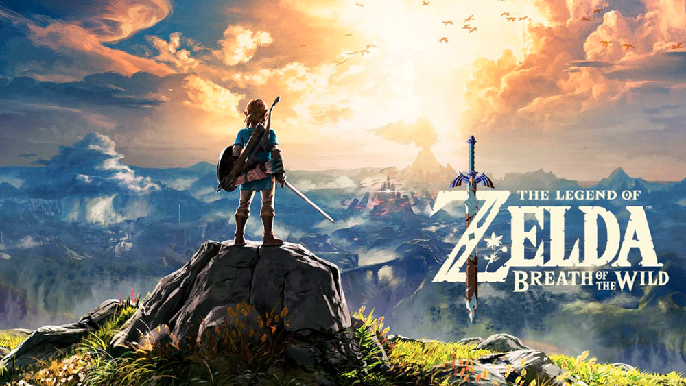
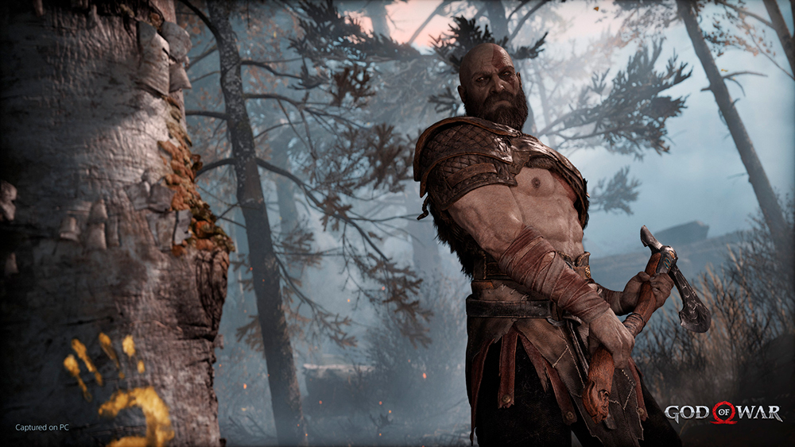
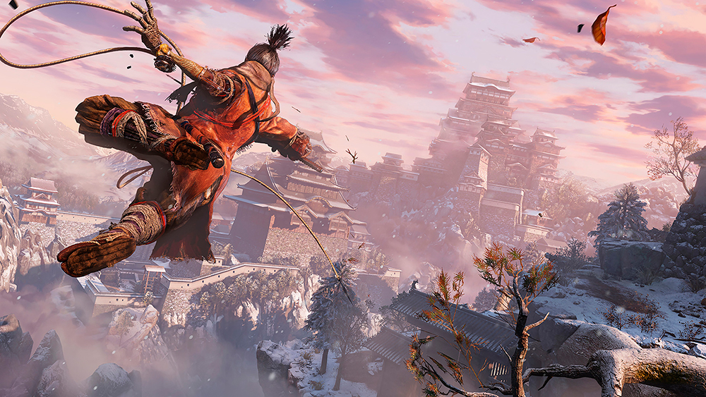
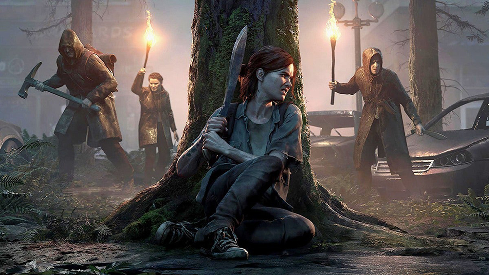
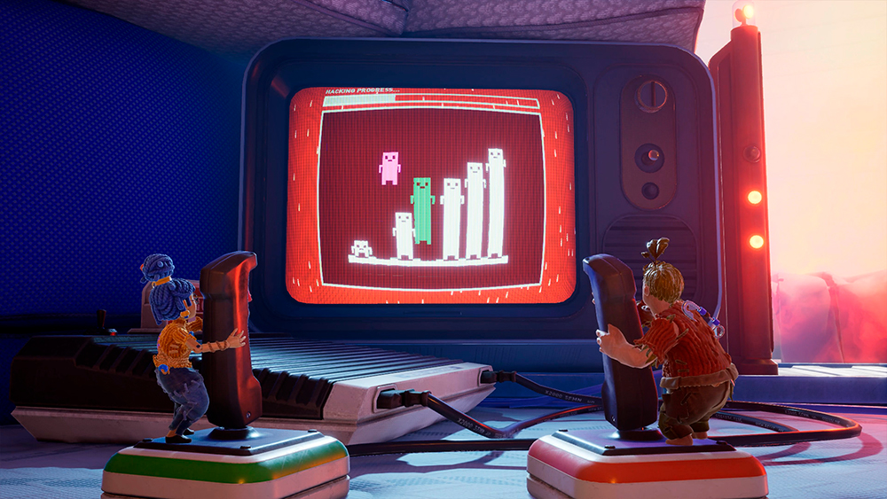

The Game Award
The Game Awards (TGA) é uma cerimônia de premiação anual que reconhece os melhores jogos eletrônicos de cada ano, além de grandes feitos na indústria.
Vencedores dos ultimos 5 anos
2017 - The Legend of Zelda: Breath of the Wild
Esqueça tudo que você sabe sobre os jogos da série The Legend of Zelda. Entre em um mundo de descobertas, exploração e aventura em The Legend of Zelda: Breath of the Wild, o novo jogo da famosa série que veio para romper barreiras. Viaje pelos vastos campos, florestas e montanhas enquanto descobre o que aconteceu com o reino de Hyrule nesta deslumbrante aventura a céu aberto.
The Legend of Zelda: Breath of the Wild foi desenvolvido pela Nintendo Entertainment Planning & Development e publicado pela Nintendo. É o décimo nono título da série The Legend of Zelda e foi lançado mundialmente para Wii U e Nintendo Switch em 3 de março de 2017.
2018 - God of War
Vivendo como um homem, fora da sombra dos deuses, Kratos deve se adaptar a terras desconhecidas, ameaças inesperadas e a uma segunda oportunidade de ser pai. Junto ao seu filho, Atreus, os dois vão se aventurar pelas selvagens florestas nórdicas e lutar para cumprir uma missão profundamente pessoal.
God of War foi desenvolvido pela Santa Monica Studio e publicado pela Sony Interactive Entertainment. Foi lançado em 20 de abril de 2018 para PlayStation 4 e em 14 de janeiro de 2022 para Microsoft Windows.
2019 - Sekiro: Shadows Die Twice
Em Sekiro: Shadows Die Twice, você é o "lobo de um braço só", um guerreiro desfigurado e caído em desgraça que foi resgatado do abismo da morte. Destinado a proteger um jovem senhor que descende de uma antiga linhagem, você se tornará alvo de muitos inimigos cruéis, incluindo o perigoso clã Ashina. Quando o jovem senhor é capturado, nada irá deter você em uma jornada arriscada para retomar sua honra — nem mesmo a própria morte.
Sekiro: Shadows Die Twice foi desenvolvido pela FromSoftware e publicado pela Activision. Foi lançado em 22 de março de 2019 para Microsoft Windows, PlayStation 4 e Xbox One e recebeu uma versão para o Google Stadia em 28 de outubro de 2020.
2020 - The Last of Us Part II
Cinco anos depois da jornada perigosa pelos Estados Unidos pós-pandêmicos, Ellie e Joel se estabelecem em Jackson, Wyoming. A vida em uma próspera comunidade de sobreviventes lhes trouxe paz e estabilidade, apesar da ameaça constante dos infectados e de outros sobreviventes mais desesperados. Quando um evento violento interrompe essa paz, Ellie embarca em uma jornada implacável para fazer justiça e encontrar uma solução. Enquanto vai atrás de cada um dos responsáveis, ela se confronta com as repercussões físicas e emocionais devastadoras de suas ações.
The Last of Us Part II foi desenvolvido pela Naughty Dog e publicado pela Sony Interactive Entertainment. É o segundo jogo da franquia e foi lançado em 19 de junho de 2020 exclusivamente para PlayStation 4.
2021 - It Takes Two
Embarque na jornada mais maluca da sua vida em It Takes Two, uma aventura de plataforma inovadora criada exclusivamente para o jogo co-op. Domine habilidades de personagem únicas e relacionadas em cada nível. Ajudem um ao outro em obstáculos inesperados e momentos hilários. Acompanhe a história emocionante de um relacionamento complicado.
It Takes Two foi desenvolvido pela Hazelight Studios e publicado pela Electronic Arts sob o selo EA Originals. Foi lançado em 26 de março de 2021 para Microsoft Windows, PlayStation 4, PlayStation 5, Xbox One e Xbox Series X/S.